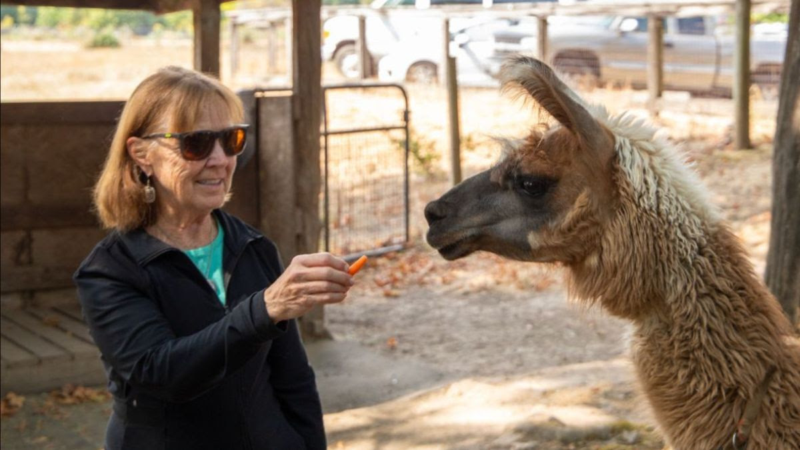

A Message From Dean Susan Tornquist

It feels a little like the calm before the storm at the Carlson College of Veterinary Medicine. The halls are not too crowded, the lounges are often quiet and many of the classrooms are empty most of the time. Of course, the Lois Bates Acheson Veterinary Teaching Hospital and the Oregon Veterinary Diagnostic Laboratory continue to be hard at work, but the first-through-third-year veterinary student spaces are largely uninhabited this time of year. That will soon change.
We are actively preparing for orientation for the new first-year students and double-checking schedules, room assignments, and other arrangements for the second- and third-year students who will be returning next month. Training veterinary students is the primary reason we are here, and we will be happy to have them back. On the other hand, the relative calm is pleasant, and we are enjoying it while we can.
We recently celebrated great faculty members and great donors with the naming of the two newest endowed faculty appointments. Dr. Kate Scollan is the new Camden Faculty Scholar and Dr. Jennifer Johns is the new Power Faculty Fellow. Both endowed appointments recognize teaching excellence. You can learn more about these two amazing veterinary educators in this issue. With the help of provost match funding, Drs. Scollan and Johns will be able to pursue some new projects in their faculty roles. We are fortunate to have these people as part of the college.
In the Lois Bates Acheson Veterinary Teaching Hospital, there are success stories every day. The story about Dr. Jurek, Lovely the mare and Grace the foal is one of these stories. We hope you enjoy reading about this heroic effort to save a life that ended up saving two lives.
I recently attended the annual Northwest Camelid Foundation fundraiser at a farm near Wilsonville, Oregon and was honored to give some remarks about the long-standing relationship between the NWCF and the college. The NWCF has been funding camelid research at the college for 37 years, and this has led to a notable number of research projects, publications, presentations and textbooks, along with the extraordinary education in camelid medicine and surgery that is offered to our veterinary students as well as veterinary students and veterinarians from around the world. I'm very grateful to the NWCF for their funding of a number of my research projects that led to increased understanding of medical problems facing llamas and alpacas. This is a perfect example of a partnership that has benefited all involved.
Enjoy this beautiful time of the summer!
Please feel free to contact me directly with questions, ideas or concerns at Susan.Tornquist@oregonstate.edu. I look forward to hearing from you.
Susan J. Tornquist
Lois Bates Acheson Dean, Carlson College of Veterinary Medicine, Oregon State University